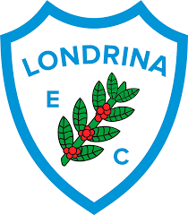
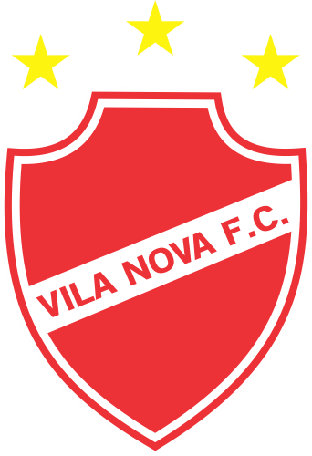

Este site foi feito no dia 24/9/2022, então pode conter informações desatualizadas.
A torcida do Cruzeiro pode respirar aliviada nesta quarta-feira (21/9) após a convincente vitória por 3 a 0 sobre o Vasco, no Mineirão, em Belo Horizonte. Após duas tentativas frustradas de conquistar o acesso à Primeira Divisão (em 2020 e 2021), o clube celeste se reestruturou e, finalmente, superou o desafio da Série B do Campeonato Brasileiro, restando ainda sete rodadas para o término do torneio.
Até o momento, a Raposa domina as principais estatísticas da competição, tanto dentro quanto fora de campo. Além da campanha consistente que levou o time à liderança isolada da Segundona, com 68 pontos, os mineiros apresentam o melhor retrospecto tanto em casa quanto fora, possuindo a defesa menos vazada, o ataque mais eficiente e a maior média de público.
Classificação:
| Posição | Times | Pontos | Jogos |
|---|---|---|---|
| 1 | Cruzeiro | 68 | 31 |
| 2 | Gremio  |
53 | 31 |
| 3 | Bahia  |
51 | 30 |
| 4 | Vasco  |
48 | 31 |
| 5 | Lobrina  | 45 | 31 |
| 6 | Ituano  |
44 | 31 |
| 7 | Ponte Preta  |
43 | 31 |
| 8 | Sport | 43 | 31 |
| 9 | Sampaio Correia  |
42 | 31 |
| 10 | CRB  |
40 | 31 |
| 11 | Criciuma  |
40 | 31 |
| 12 | Tombense  |
40 | 30 |
| 13 | Vila Nova  | 37 | 31 |
| 14 | Novorizontino | 36 | 31 |
| 15 | Chapecoence  |
35 | 31 |
| 16 | Guarani  |
35 | 31 |
| 17 | CSA | 32 | 30 |
| 18 | Brusque  |
32 | 31 |
| 19 | Operario  |
31 | 30 |
| 20 | Nautico  |
27 | 31 |